These are little pet projects I had over the years. (At least those that are available on GitHub.) The topics are ranging from computer graphics to emulation. They are in varying state of completion (as most pet projects tend to do).
A WP7 inspired launcher for Android written in OpenGL ES
Keywords: Java OpenGL ES Android
Nes emulator written in C#
Keywords: C# 6502 CPU bytecode interpreter NES
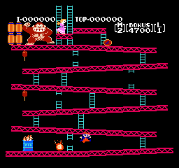
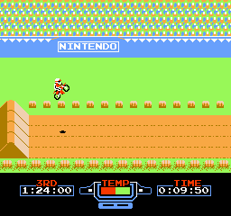
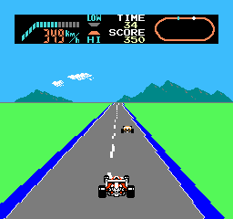
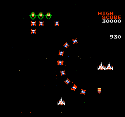
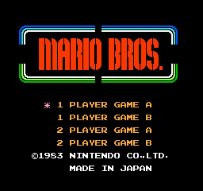
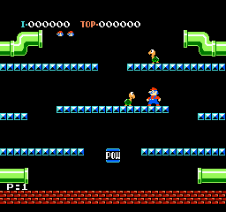
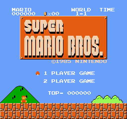
A procedural city generator written in C# using OpenGL 3.3
Keywords: C# OpenGL GLSL procedural content generation
Started out as a little webgl experiment. Features batched sprite rendering sprite animation collision detection, and a little bit of the WebAudio API.
The original intent for this project was to prototype a batched renderer. Based on the experience gained here, a batched renderer was implemented in my ProceduralCity project.
In the recent weeks it was resurrected and a lot more features were implemented:
Keywords: WebGL GLSL TypeScript
To try it click here to open it on a new tab
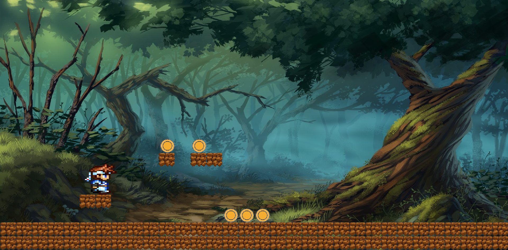
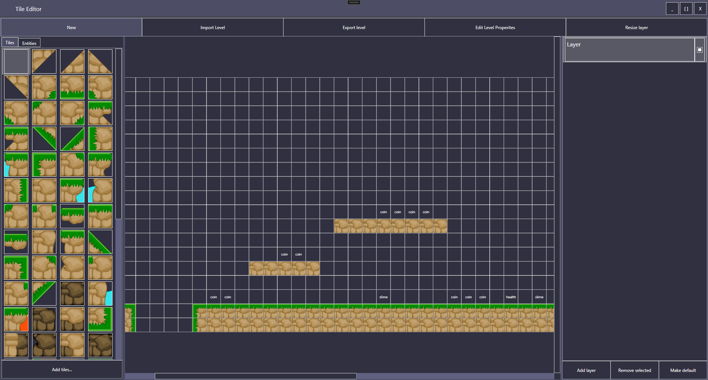
Archived in favor of a WPLauncher ES
A WP7 inspired launcher for Android written in Xamarin.
Keywords: C# Xamarin Android
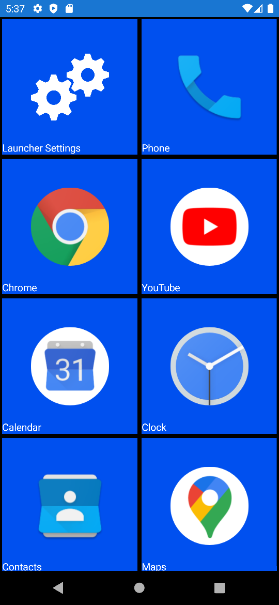
A simple file renamer tool to fix filenames in old hungarian RPGMaker2000 games. Unlike most of my pet projects, which are tend to be proof-of-concept projects, while implementing this one, I took a similar approach that I use in my professional work: TDD, tests for everything, service layer, interfaces, DI
Keywords: C# RPGMaker2000 FluentAssertions
A fun little tool written on a boring afternoon. It translates a Brainfuck program code to .NET IL code. The output is a runnable executable.
Keywords: C# IL code brainfuck compiler
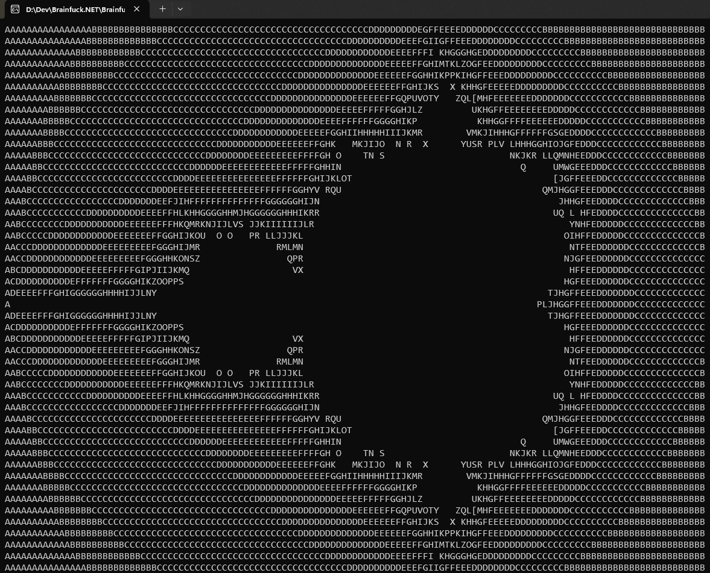
An object oriented XCP (Universal Measurement and Calibration Protocol) implementation. The protocol itself is used by companies in the automotive industry to do measurements and calibrations on ECUs in cars. Written in C++. Most of the mandatory commands are supported (although not every single one).
This was meant to be my MSc thesis, but unfortunatelly it was never fully realized. And wasnt tested on real hardware, only on a simulator.
In spite of this the repository has 80+ stars on GitHub.
Keywords: C++ XCP automotive
This site itself. I wanted to try what it feels like NOT to use any fancy framework for a simple SPA website. This site uses vanilla JS to do the routing tasks. Now, that routing is working okay, I might write a template engine. Data binding also couldn't hurt...
Keywords: HTML CSS JavaScript